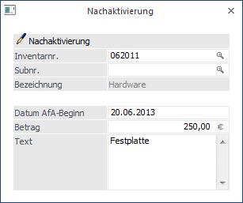
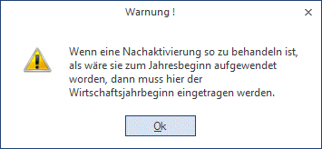
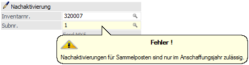
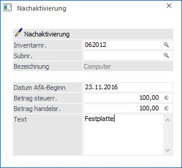
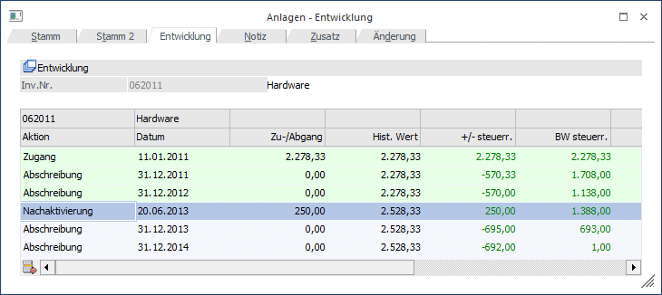
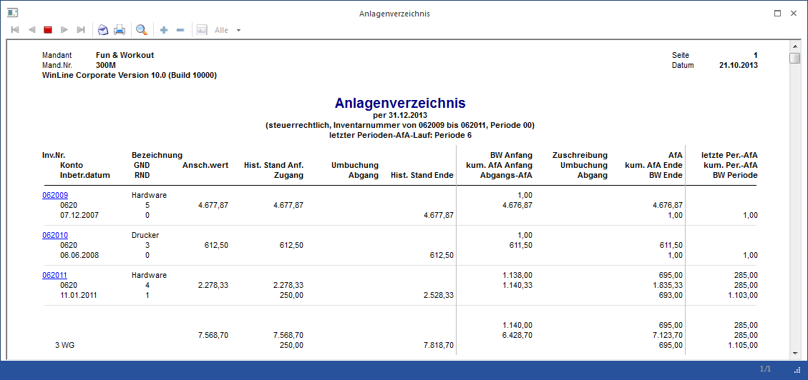

Über das Programm Nachaktivierung können Nachaktivierungen oder auch nachträgliche Anschaffungs- und Herstellungskosten für ein bereits existierendes Anlagegut gebucht werden, ohne eine Subanlage anzulegen.
Eine Nachaktivierung kann im Anschaffungsjahr oder auch in Folgejahren vorgenommen werden.
Um eine Nachaktivierung durchzuführen, wählen Sie den Menüpunkt
Ø Buchen
Ø Nachaktivierung

Ø Inventarnr.
Hier geben Sie die Inventarnummer des Anlagegutes laut Anlage im Anlagenstamm ein, auf das die Nachaktivierung gebucht werden soll. Die Matchcode-Suchfunktion (Drücken der F9-Taste oder Anklicken der kleinen Lupe hinter dem Eingabefeld), erleichtert Ihnen die Suche.
Ø Subr.
Eingabe der Subnummer, falls Sie für dieses Anlagegut eine Subnummer im Anlagenstamm angelegt haben, für die eine Nachaktivierung erfasst werden soll.
Ø Bezeichnung
Hier wird die im Anlagenstamm erfasste Bezeichnung des ausgewählten Anlagegutes angezeigt.
Ø Datum AfA-Beginn
Eingabe des Datums, ab wann die AfA für die Nachaktivierung gerechnet werden soll. Dieses Datum wird programmintern ähnlich behandelt wie das Inbetriebnahmedatum bei einer Subanlage.
Bei Nachaktivierungen zu einem Anlagegut in Folgejahren, also nicht im Anschaffungsjahr, kann dieses "Datum AfA-Beginn" abweichen von dem tatsächlichen Nachaktivierungsdatum.
Nachaktivierung Österreich
Nachaktivierungen oder auch nachträgliche Anschaffungs- und Herstellungskosten im Folgejahr werden in der Regel zum Zeitpunkt der Anschaffung aktiviert, d.h. es wird das tatsächliche Anschaffungsdatum, z.B. 20.06.2013, als Datum AfA-Beginn eingetragen.
Nachaktivierung Deutschland
Nachaktivierungen oder auch nachträgliche Anschaffungs- und Herstellungskosten sind in Folgejahren so zu behandeln, als wären sie zu Beginn des Jahres aufgewendet worden. D.h. es wird als Datum AfA-Beginn der WJ-Beginn, z.B. 01.01.2013, eingegeben.
In einem deutschen Mandanten kommt eine entsprechende Meldung, wenn bei der Nachaktivierung in einem Folgejahr nicht der WJ-Beginn als Datum AfA-Beginn eingetragen wird.

Für Sammelposten, Anlagegüter mit dem Kennzeichen "Poolabschreibung", ist eine Nachaktivierung nur im Anschaffungsjahr zulässig. Wird eine Nachaktivierung in einem Folgejahr erfasst, erscheint die Meldung

Ø Betrag
Eingabe des Nachaktivierungsbetrages oder der nachträglichen Anschaffungs- und Herstellungskosten. Es kann auch ein negativer Betrag, z.B. für die nachträgliche Erfassung von Skonto oder Rabatt eingegeben werden.
Ø Text
Hier kann ein 255-stelliger Buchungstext eingegeben werden. Dieser Text wird in den Auswertungen Historien-Journal und Anlagestammblatt angedruckt.
Hinweis für Österreich:
Für Mandanten mit dem Länderkennzeichen A kann eine Nachaktivierung steuerrechtlich und/oder handelsrechtlich vorgenommen werden.

Ø Betrag steuerr.
Eingabe des steuerrechtlichen Nachaktivierungsbetrages oder der nachträglichen steuerrechtlichen Anschaffungs- und Herstellungskosten. Es kann auch ein negativer Betrag, z.B. für die nachträgliche Erfassung von Skonto oder Rabatt eingegeben werden.
Ø Betrag handelsr.
Eingabe des handelsrechtlichen Nachaktivierungsbetrages oder der nachträglichen handelsrechtlichen Anschaffungs- und Herstellungskosten. Es kann auch ein negativer Betrag, z.B. für die nachträgliche Erfassung von Skonto oder Rabatt eingegeben werden.
Buttons

Ø OK
Durch Drücken des OK-Buttons wird die Nachaktivierung abgestellt.
Ø Ende
Mit dem Ende-Button wird das Fenster geschlossen, ohne dass eine Buchung gespeichert oder abgestellt wird.
Ø Info
Nach Drücken des Info-Buttons werden die wesentlichsten Werte des aktiven Anlagegutes angezeigt. (Anschaffung, AfA, TW-Abgang, letzte Änderung, usw.)
Eine Nachaktivierung wird im Anlagenstamm Register Entwicklung als separate Buchungszeile dargestellt.

Im Anlagenverzeichnis und Anlagenspiegel wird eine Nachaktivierung in der Zugangsspalte ausgewiesen.
